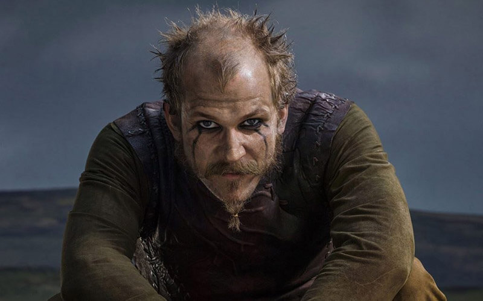
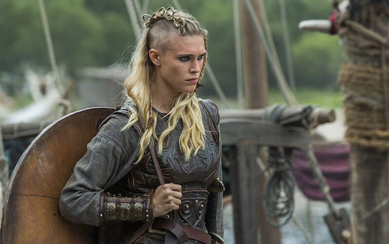
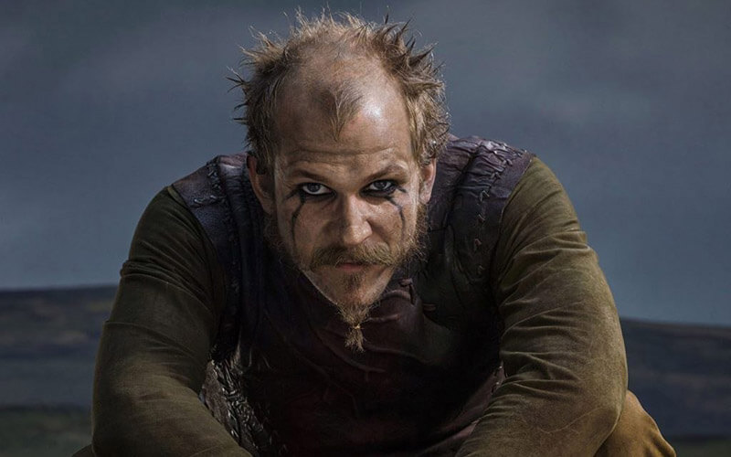
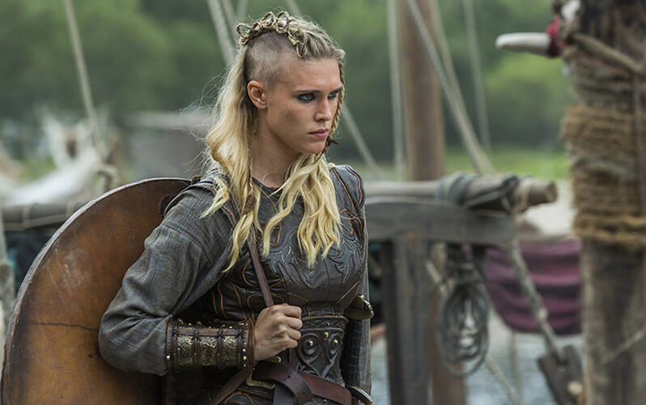

Главные герои
 



Рагнар
Рагна́р Лодбро́к (др.-сканд. Ragnarr Loðbrók) - полулегендарный скандинавский конунг из рода Инглингов, ключевой персонаж сериала.
Умелый воин и амбициозный вождь, Рагнар на протяжении почти всей своей жизни следует пути викинга. Рассекая море в поисках боевой славы и наживы, он стремится обрести новые знания, открыть неизвестные земли и изменить нелегкую судьбу своего народа, живущего в суровых условиях Скандинавского полуострова.
Лагерта
Лаге́рта (или Хладге́рда, др.-сканд. Hlaðgerðr, лат. Ladgerda, Ladgertha или Lagertha; в сериале также носит псевдоним Ингстад) - известная скандинавская воительница, упомянутая в хрониках Саксона Грамматика, первая жена датского морского конунга Рагнара Лодброка. В сериале Лагерта активно участвует в походах викингов, колонизации ими новых земель и междоусобных распрях скандинавских вождей.
Эта отважная и независимая женщина способна проявлять железную решимость, когда дело касается ее личного достоинства, семьи или власти. Лагерта также известна своим милосердием и благородством.
Ролло
Ро́лло (или Хрольф, др.-сканд. Hrólfr, лат. Rollo, исторический прототип также известен под именами Ролло́н, Рольф и Роберт I) - известный вождь викингов, первый герцог Нормандский, основатель Нормандской династии. В сериале - старший брат Рагнара Лодброка. Знаменитый своей силой, бесстрашием и диким, импульсивным нравом, он активно участвует в разорительных набегах викингов на страны Европы.
Безуспешные попытки возвыситься на фоне влиятельного и удачливого брата приводят Ролло к ожесточенной внутренней борьбе, которая делает его несчастным и вынуждает искать пути выхода из кризиса. В конечном счете Ролло отворачивается от своего народа, принимает христианство и переходит на сторону Западно-Франкского государства, заняв высокое положение при дворе императора Карла.
Бьёрн
Бьёрн Железнобо́кий (др.-сканд. Björn Járnsíða, швед. Björn Järnsida) - полулегендарный скандинавский конунг, основатель шведской королевской династии Мунсё. В сериале - сын Рагнара Лодброка и Лагерты, брат Гиды, единокровный брат Уббе, Хвитсерка, Сигурда и Ивара.
Сильный и решительный человек, Бьёрн намерен стать великим воином, лидером и первооткрывателем. Он полностью разделяет жажду своего отца к приключениям и поддерживает его, регулярно участвуя в грабительских набегах викингов. Набравшись опыта в сражениях и мореплавании, возглавляет собственные походы. Необыкновенная стойкость и выносливость в бою побуждают отца дать Бьёрну прозвище «Железнобокий», под которым он и входит в историю. Будучи самым старшим из сыновей конунга Рагнара, Бьёрн по праву претендует на трон Каттегата.
Флоки
Флóки (др.-сканд. Flóki) - скандинавский кораблестроитель, активно участвующий в грабительских набегах викингов на страны Европы. Близкий друг и соратник Рагнара Лодброка. Эксцентричный и чудаковатый, он живет в уединенном доме в лесу, работая в своей мастерской на берегу моря.
Возлюбленный и муж Хельги. В их браке рождается дочь Ангрбода, но она умирает от лихорадки еще маленькой. Спустя много лет по настоянию Хельги Флоки вынужден удочерить мавританскую девочку Танарус, отношения с которой завершаются семейной трагедией.
Торунн
То́рунн (др.-сканд. Þórunnr) - скандинавская воительница, бывшая ранее одной из рабынь Аслауг. Первая жена Бьёрна Железнобокого и мать Сигги, рожденной в законном браке.
Освободившись от статуса тир по доброй воле своей госпожи, Торунн обучается боевым навыкам и становится девой щита. В дальнейшем девушка, проигнорировав беременность, принимает непосредственное участие в очередном походе викингов в Англию. Обезображенная в одном из сражений, Торунн уверяется в неискренности чувств Бьёрна, впадает в отчаяние и навсегда покидает Каттегат.